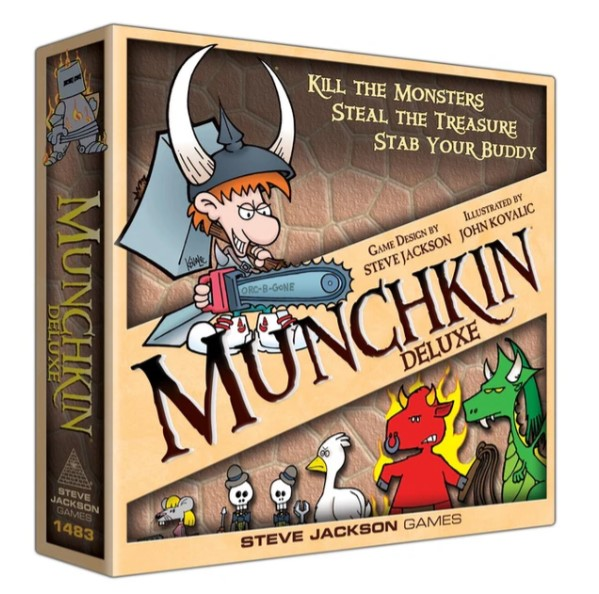

How to Play Munchkin
Objective
The goal of Munchkin is to be the first player to reach level 10 by killing monsters, leveling up, and acquiring treasure.
Components
- Door Cards
- Treasure Cards
- A way to track levels
- Dice
Setup
- Shuffle the Decks: Separate the Door and Treasure cards into two decks. Shuffle each deck separately and place them face down in the center of the table.
- Deal Cards: Each player is dealt four Door cards and four Treasure cards.
- Starting Level: All players start at Level 1.
- Character Setup: Players can play Race, Class, and Item cards from their hand to establish their character at the beginning of the game.
Gameplay
Munchkin is played in turns with each turn consisting of several phases.
- Kick Open the Door
- The active player draws one Door card and flips it face up for everyone to see.
- If it's a Monster: The player must fight it.
- If it's a Curse: The player immediately suffers the effects.
- If it's any other card: The player can either put it into their hand or play it immediately.
- Combat (if applicable)
- Combat Process:
- Compare Strength: The player's strength (level + bonuses) is compared to the monster's strength.
- Ask for Help: The player can ask for help from other players (usually in exchange for treasure).
- Defeat the Monster: If the player's strength is higher, they defeat the monster, gain levels, and draw the specified amount of Treasure cards.
- Run Away: If the player's strength is lower and they cannot or choose not to ask for help, they must attempt to run away by rolling a die. A roll of 5 or 6 allows them to escape without penalty. A roll of 1 to 4 means they suffer Bad Stuff listed on the monster card.
- Loot the Room
- If no combat occurred: The player draws one more Door card face down into their hand.
- Charity
- Hand Limit: If the player has more than five cards in their hand, they must discard down to five. Discarded cards go to the lowest-level player(s). If tied, split the cards as evenly as possible.
Other Rules
- Playing Cards: Players can play cards from their hand at almost any time, but only one Race and one Class card at a time unless they have cards allowing more.
- Trading: Players can trade items (not levels, races, classes) with each other.
- Cheating: Some cards explicitly state they allow cheating. Cheating outside of this context is not allowed.
Winning the Game
The first player to reach Level 10 wins the game. Level 10 must be achieved by killing a monster, not by any other means (such as cards that grant levels).
Important Terms
- Levels: Indicate a player's progress; gained by defeating monsters and certain cards.
- Treasures: Items, equipment, and one-shot bonuses gained from defeating monsters or drawn from the Treasure deck.
- Curses: Negative effects that hinder players, drawn from the Door deck.
- Classes and Races: Cards that define a player's character traits and abilities.
Tips
- Strategize: Use cards wisely to either bolster your strength or hinder your opponents.
- Negotiate: Form temporary alliances to tackle strong monsters, but be wary of backstabbing.
- Manage Inventory: Equip items that give the best bonuses and trade or discard less useful ones.